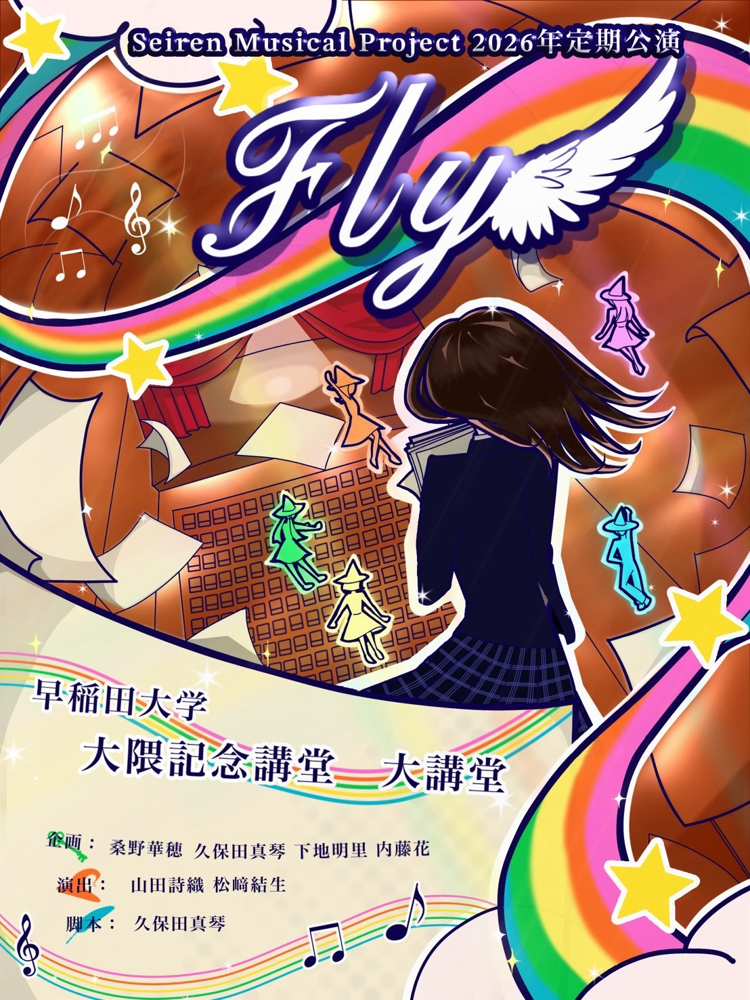

INFOお知らせ
- 2026.11.18 webサイト公開
- 2026.11.20 公式instagramにてOBOG&キャストインタビュー公開
- 2026.11.20 公式instagramにて稽古動画公開
- 2026.11.25 webサイトのmusicにて本公演スタッフインタビュー公開
A LITTLE NOTE
あなたへ
「いざ、ミュージカルの旅へ。Fly___！」個性豊かな仲間たちが粒ぞろいな、Seiren Musical Project。多様な個性が散りばめられている中、唯一共通していること。それは…『伝える』ことに全力なこと！！そーんな私たちだからできる、青春で☆熱くて☆POP☆なミュージカルをお届けします！さああなたも、ミュージカルの波に巻き込まれて！Let's Fly___！！
SYNOPSISあらすじ
内気な少女・ゆか。彼女はミュージカルが大好き。やがて「ミュージカルを書くこと」なら、普段は外に出せない気持ちや思いを物語に託せると気づき、ひとり脚本をしたため続ける。ある日、文化祭で上演する脚本の募集を知り、勇気を出して『名無しさん』で原稿を投函する。するとまさかの採用。 ゆかが書いた『ミュージカル⭐︎色欲のハワイアンブルー』が文化祭の舞台で上演されることに。ミュージカルをやるとなると、演出家も必須。 ここで、サッカー部キラキラキャプテン少女・あおが「演出やりたい！」と手を挙げる。しかしあおは、作品の中の歌やダンスを削ることを提案。スター性が光る彼女の意見に周りも大賛同。あおウェーブが巻き起こる。 匿名で応募した＆内気すぎるゆかは、自分の思いを託したミュージカルから音楽が失われていくのをただ見ていることしかできなかった。悩み続けた深夜0時22分。 終電にやっとこさ乗れたゆかの前に、ミュージカルの世界を旅するという、音楽と感情の妖精たち「フェアリーズファイブ」が現れ____。
OUTLINE公演概要
- 日程
- 2026年12月8日(火)17:00~18:30
- 会場
- 大隈講堂（早稲田大学大隈記念講堂）
- チケット料金
- 無料（カンパ制）
CONTACTお問い合わせ
本公演に関するお問い合わせはdentou.tunag26@gmail.comまでお願いいたします。